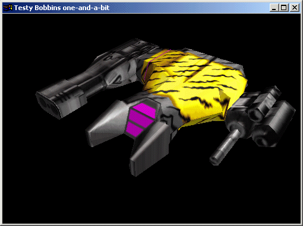
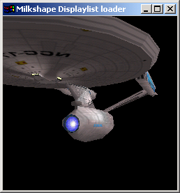
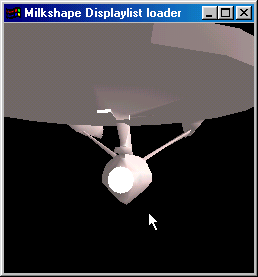

ding object loading object loading object loading object loading object loading ct loading object loading object loading object loading object loading object lo |
introduction
It's no use writing 3D applications if we limit ourselves by
constructing objects solely from opengl primitives. It's better to design objects
using a dedicated modeler. These provide the proper tools we need for such
a task. Of course, after we've designed and built our object we need to
load it into opengl. Initially to keep things simple, we'll design a
limited 'object language' that will allow us to load objects and colour
properties.
issues So how do 'real' object formats store their data? Below is an example of a simple, easy to parse file format that contains the type of data necessary to record the shape and properties of an object. To the right is an explanation of the file format.
|
VERTEX: 8
-1 1 0 1 1 0 1 -1 0 -1 -1 0 -1 1 1 1 1 1 1 -1 1 -1 -1 1 MATERIAL: 2 R: 0.3 G: 0.3 B: 0.6 R: 0.4 G: 0.4 B: 0.1 FACE: 6 0 1 2 3 1 0 4 5 1 1 3 7 6 2 1 4 5 6 7 0 0 4 7 3 1 1 5 6 2 1 |
|
So there you have it. A commented, clear (IE no pointer passing) version of the simple parser is here.
[mesh loader]
It works okay as long as you don't throw any dodgy files its way.
Remember we're trying to keep it simple, so there is no error checking.
Notice how it creates the display list and optimises the material properties to
minimise colour state changes...
lightwave
Just to make it clear, I have nothing against lightwave for modeling
and rendering. [texture tools extortion]
explains why lightwave models aren't the best choice for objects in
games.
milkshape
Okay, so we're smug in the knowledge that this kind of thing actually isn't that difficult. Lets try something a little more challenging.
Firstly read a copy of [milkshape's file format]. Now breathe and relax!
Like the program before, we want our function to return a pointer to a display list. This time however we'll be loading textures, mapping them onto surfaces and making normals for smooth shading.
If we stick to good software engineering principles all of this is not as horrific as it sounds. For starters, a single function like in the previous program wouldn't be any use. We'll need a number of smaller functions collected together to form a library. This helps us reason about the problem in small pieces and ensures that we get each part working properly on its own without the rest of the project to worry about.
If you're new to programming then you should buy a good software engineering book with plenty of examples - the simpler the language the better (IE stay away from
C/C++ for as long as is humanly possible!)
We're splitting our main task into a few 'subtasks'. These will the basis for
our .c functions that will make up the library. If we're careful about how we separate our functions, adding extra functionality (like normal and texture
coordinate generation) is much easier
story so far... The binary filespec. in the SDK appears to be incorrect - either it's wrong or I'm being incredibly stoopid. So we'll be loading the ascii version of the files. This isn't what I'd hoped, but its not a total disaster.

Now this picture is the indie fighter from i-war (no, I've never seen it this close either). You can see that the ship fully textured, we've generated our own normals - lots of people ask how to do this, so we'll ignore the normals calculated by milkshape.
The textures for the Indie Fighter were collected together into one 256x256 image, the benefits of milkshape's interactive texturecoord editing become clear - as we said in [texture tools extortion], you save on texture memory and on opengl state changes.
first release The two zip files below contain everything necessary to load milkshape ascii files. The code for both libraries is heavily commented but quite a few new opengl functions are introduced.
You'll want an object with textures to try it out too. The [starship enterprise] has always been a favourite of mine. The screenshots below were grabbed from the displaylist version of the program. Press '1' to see the model untextured, you can see more clearly that we generate vertex normals and use
glMaterial to set emission properties for the deflector dish and running lights.|
 |
 |
"to do" checklist There's a few things wrong with this that need fixing:
|
[done] |
Smoothed normals would be nice. |
|
[pending] |
EVERY surface needs a texture or you get garbage mapped on to it. I'm really lazy, a simple if statement would fix this. |
|
[pending] |
Textures need flipping after you've mapped them in milkshape. I'm at a loss with this one. Once you've mapped your object in milkshape and you run it through the loader the textures appear upside down. Just flip them in your art package and you'll be fine. You could flip them in the tgaloader (make a bit field argument like TGA_FLIP_VERTICAL). It's probably something to do with the way milkshape assigns UV coords... |
|
[pending] |
Texture names can't have a full path. The tgaloader goes funny if the textures you're loading aren't in the same directory. |
the future...
I'd like to add support for
multipass texturing - lightmaps or damage maps. This is where the vertex
arrays will realy come into their own because the geometry isn't static we can
still play about with it. Keep checking back for more updates.
Website and content,
Paul Groves.